Gallery
Studios, sites & speaking.
A visual archive across three threads: humanitarian construction in Slovakia, audio-engineering work behind world-class consoles, and public speaking on spatial / 8D audio. Click any image to enlarge. The studio/audio material sits alongside the Music & Audio page; the refugee housing work is cross-cutting with the main CV.
Studios & Consoles Abbey Road Institute · STMPD · Bethlehem
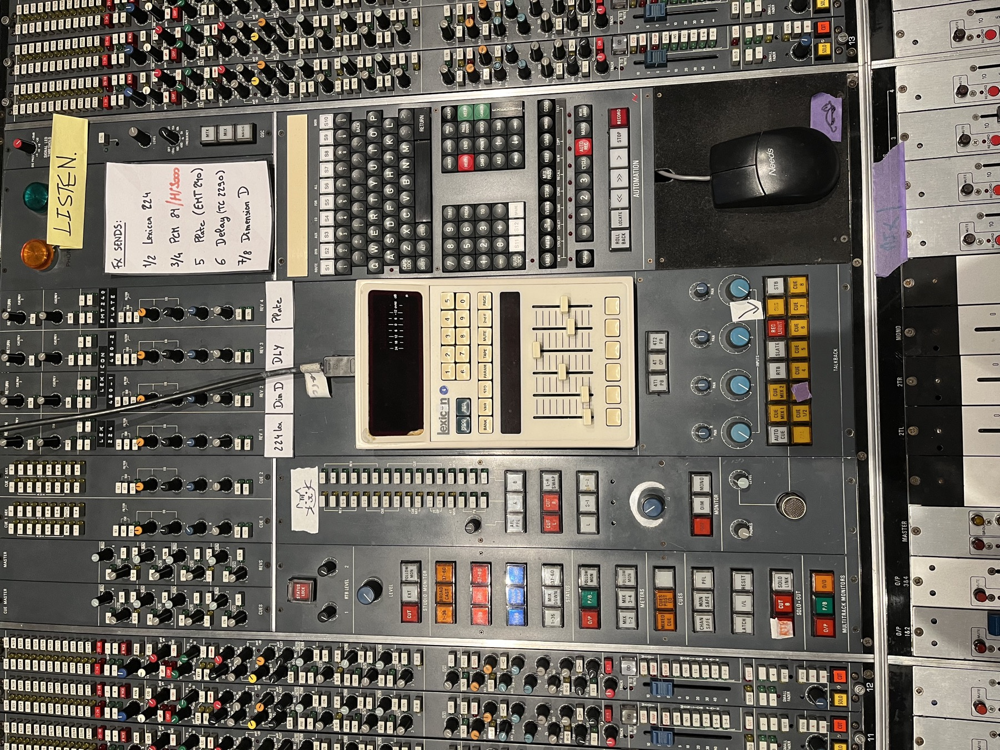
SSL ConsoleTracking session - full view
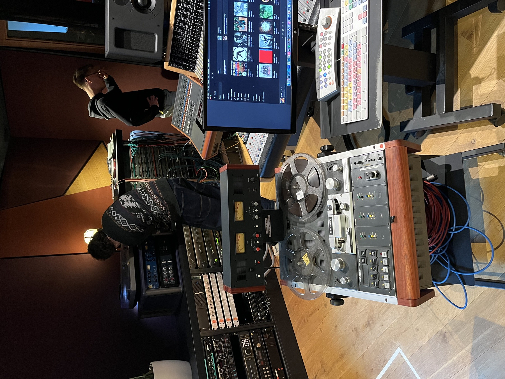
AnalogueTape machine in the chain
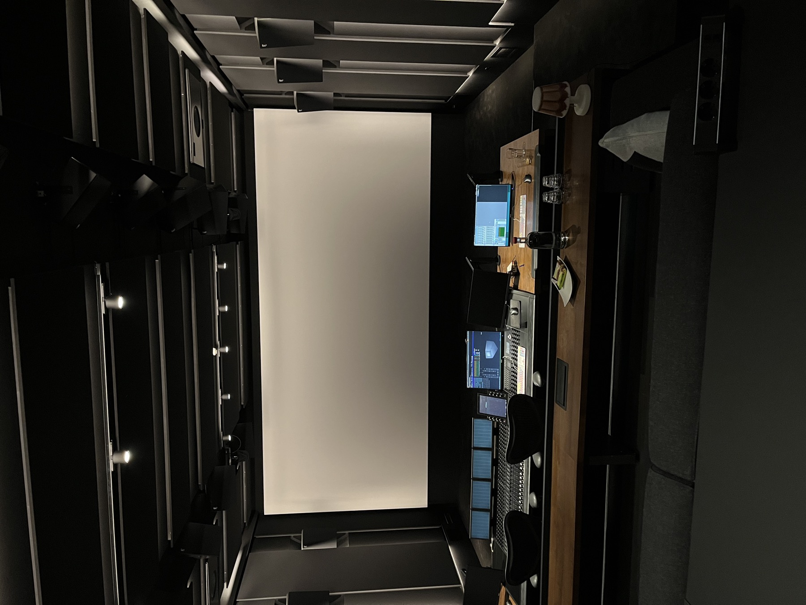
STMPD StudiosControl room session
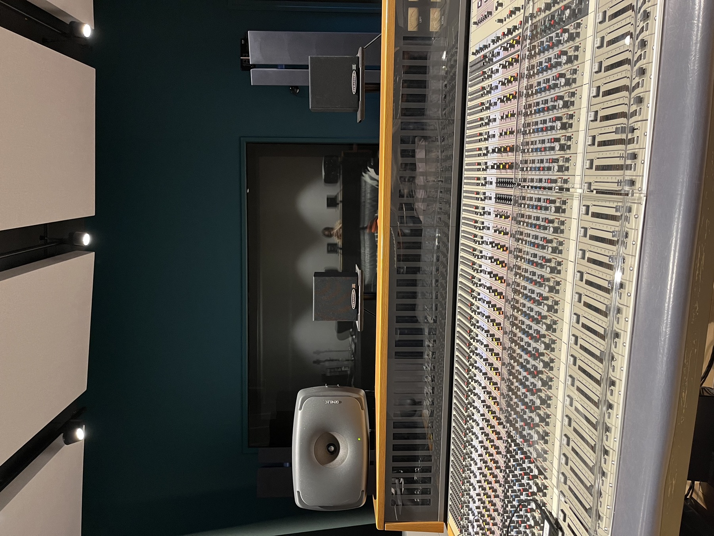
STMPD StudiosIn the room Lady Gaga used
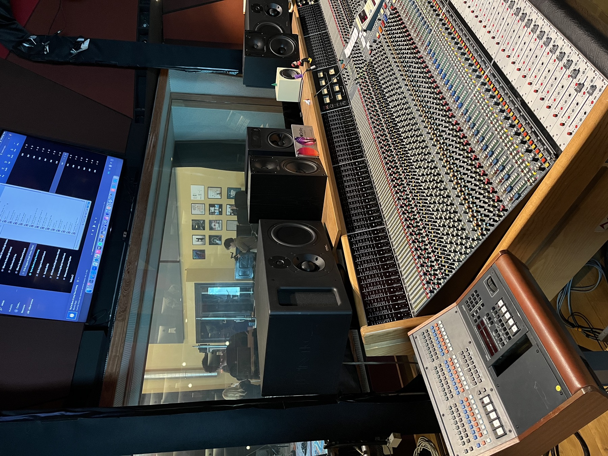
ConsoleConsole close-up
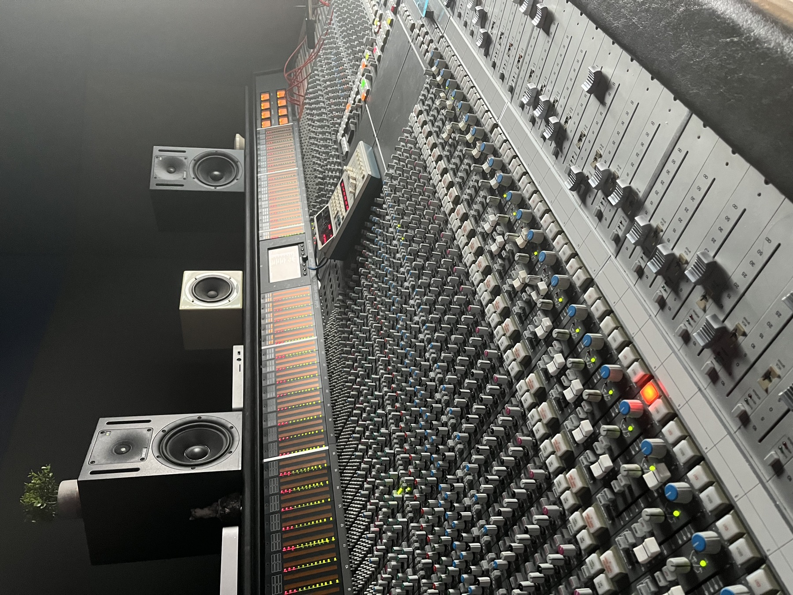
TrackingAlternate angle

FadersOn the faders

AutomationFlying faders

PatchbayRouting the patch
Refugee Housing · Slovakia 2022 - 2024
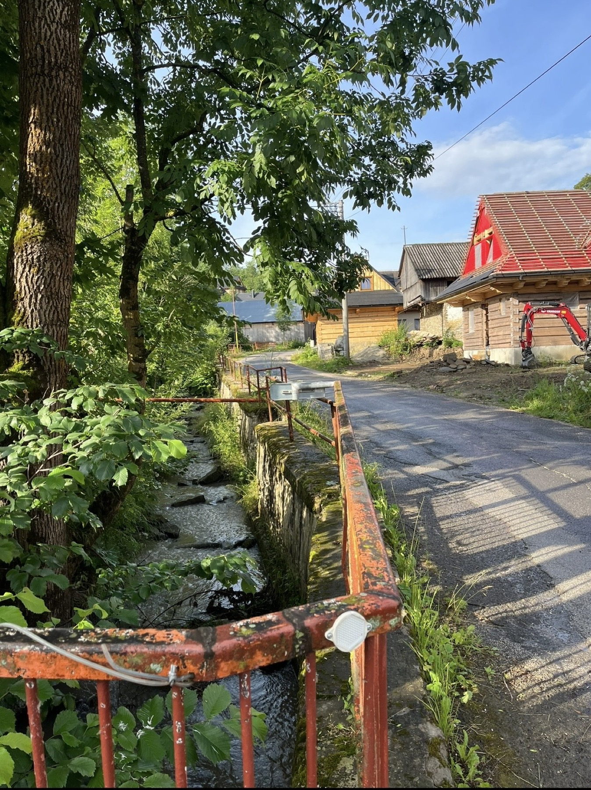
Lesnica · 2022Build site - the place where I helped
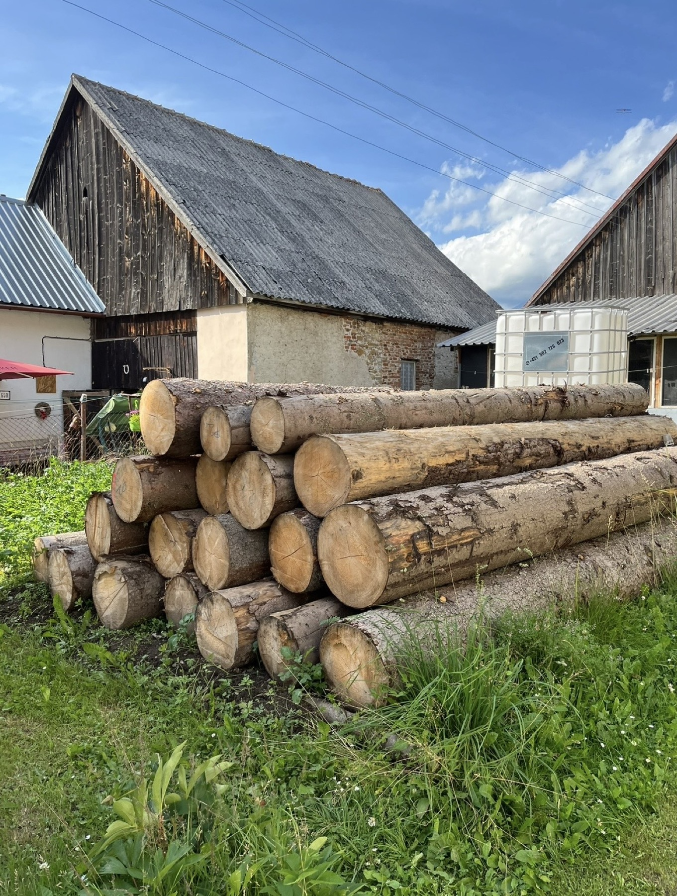
Construction SiteWorking the build, day two
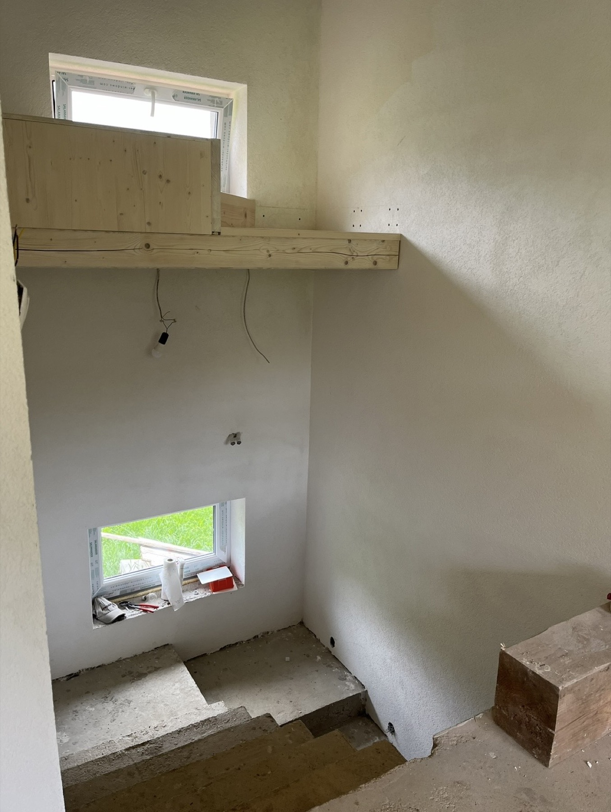
BeforeStaircase frame, pre-install
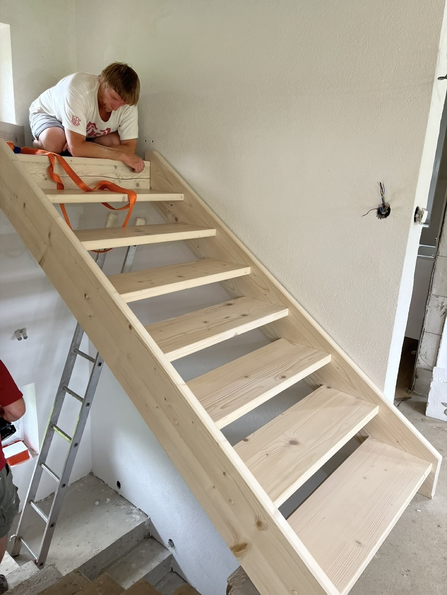
AfterStaircase installed and finished
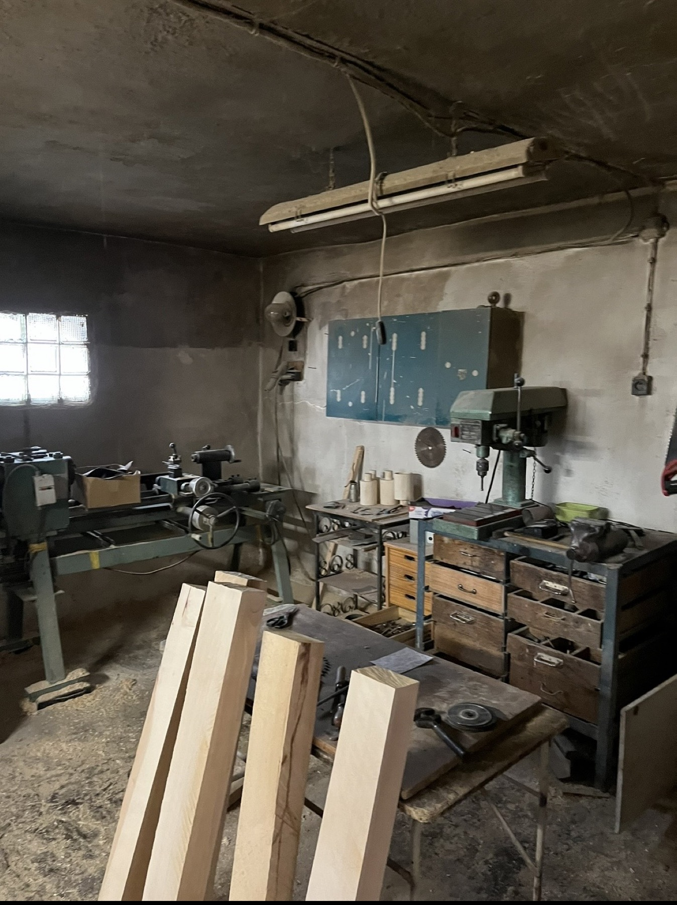
MaterialsCutting wood for the framing
Speaking & Tinkering Spatial / 8D Audio · Linux
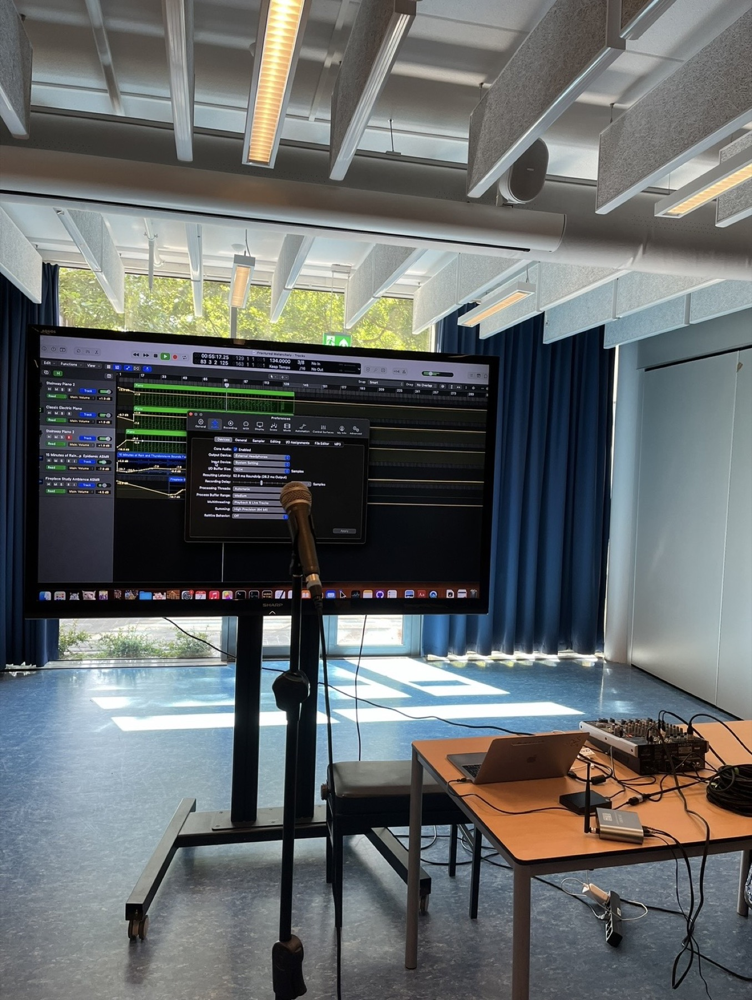
Conference TalkMy talk on 8D / spatial audio
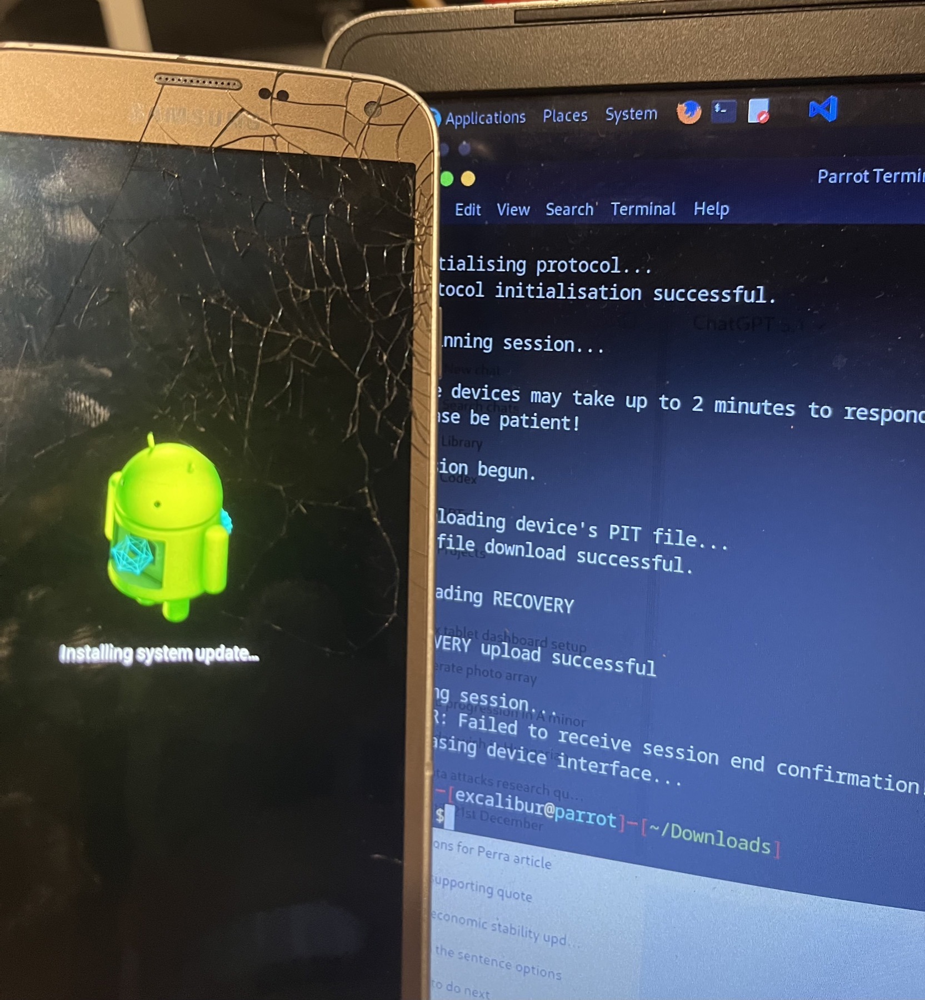
TinkeringBooting Linux on a phone